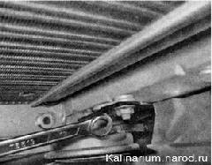
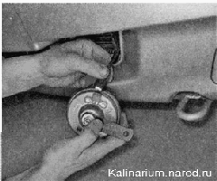

Звуковой сигнал снятие, регулировка и заменаНа корпусе звукового сигнала расположен регулировочный винт, вращая который можно подстроить звучание звукового сигнала. Регулировкуудобнее выполнять с помощником. Снятие 1. Снимаем решётку переднего бампера. 2. Накидным ключом на 13 мм отворачиваем гайку крепления пластины звукового сигнала. 3. Извлекаем звуковой сигнал из под бампера и отсоединяем колодку жгута проводов от звукового сигнала. На внутренней стороне звукового сигнала выполнен регулировочный винт. Можно подать напряжение от аккумуляторной батареи на выводы звукового сигнала и шлицевой отверткой с тонким лезвием подрегулировать звучание сигнала. Если звук хриплый и слабый, а добиться приемлемого звучания вращением регулировочного винта не удается, звуковой сигнал необходимо заменить. Установка Устанавливаем звуковой сигнал в обратной последовательности. |